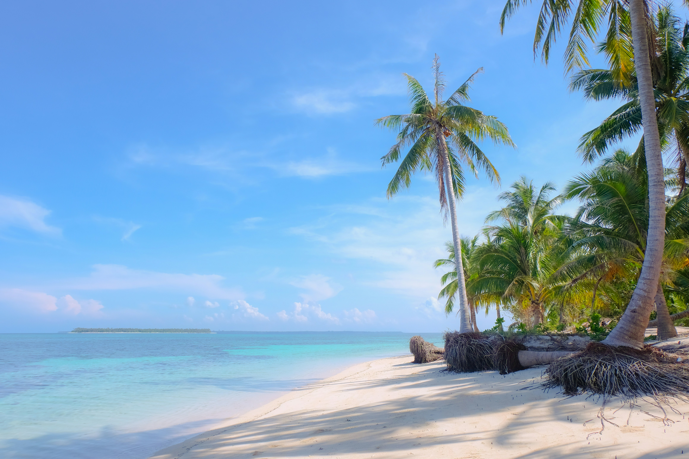
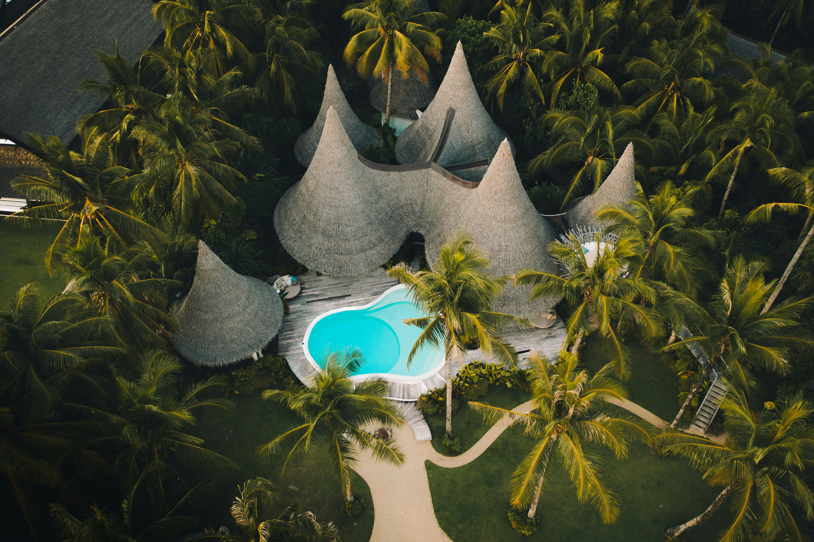
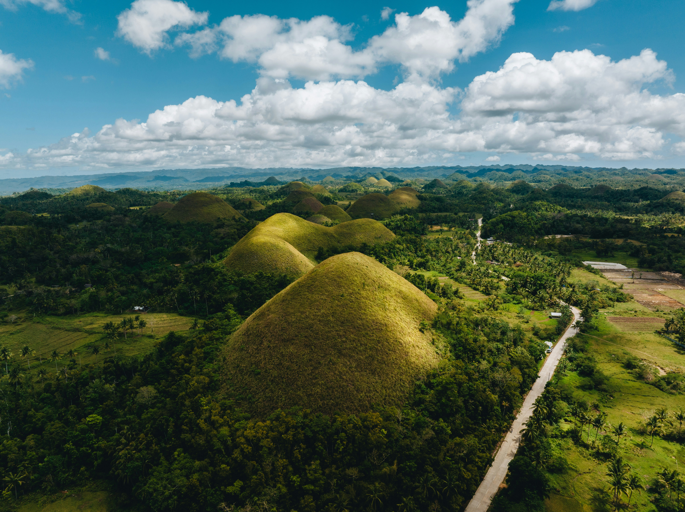
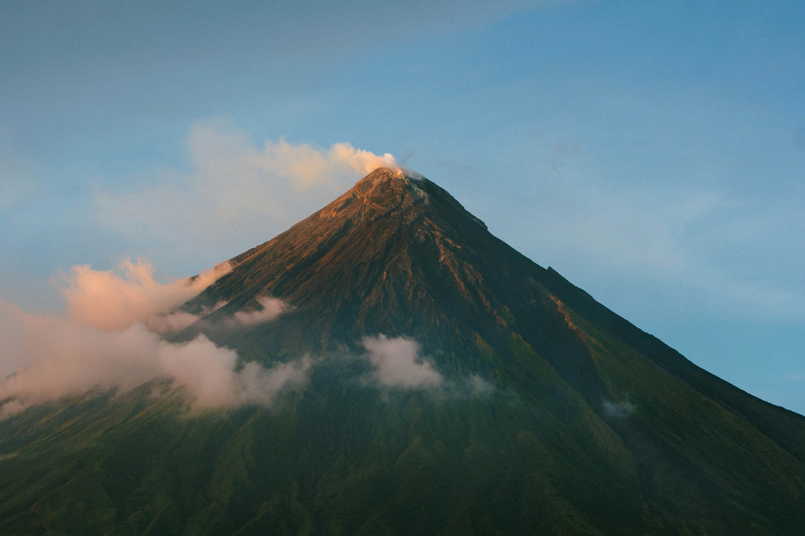
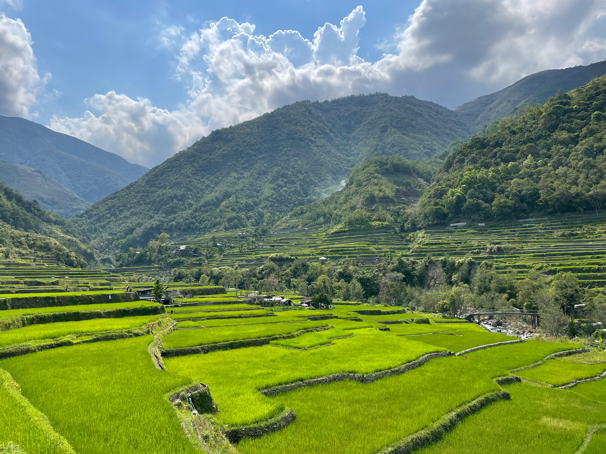

Your next adventure starts here!
Sign up for our travel dispatch by clicking that button right over there.
A simple visual guide to beaches, highlands, and scenic escapes across the Philippines.


Siargao, the Surfing Capital of the Philippines, is a laid-back teardrop island known for world-class waves, white sands, and vast palm groves.

The Chocolate Hills are a famous group of 1,260 to over 1,776 cone- and dome-shaped hills in Bohol, Philippines, that turn chocolate brown during the dry season.

Mayon Volcano is an active stratovolcano in Albay, Bicol Region, Philippines, famous for its nearly symmetrical cone shape. It is the most active volcano in the country.

The rice terraces of the Philippines are roughly 2,000-year-old farming steps carved into the mountains of Ifugao in northern Luzon by the indigenous Ifugao people.
To glimpse the islands is to remember how vast beauty can be—carried in sea breeze, quiet mornings, and the warmth of every shore.
- Sulyap
Sign up for our travel dispatch by clicking that button right over there.